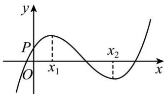

深圳中学 2024 级高二数学周测（8）
一、选择题：本题共8小题，每小题5分，共40分.在每小题给出的四个选项中，只有一个选项是正确的.
1. 已知离散型随机变量 X 的方差为 1，则 \(D(2X+1)=(\quad)\)
A. 2
B. \(\frac{1}{2}\)
C. 4
D. \(\frac{1}{4}\)
2. 设函数 \(f(x) = \frac{\mathrm{e}^x}{x + a}\) . 若 \(f'(1) = \frac{e}{4}\) ，则 \(a = (\quad)\) .
A. 1
B. -1
C. -3+2√2
D. -3-2√2
3. 假设 A, B 是两个事件，且 \(P(A) > 0\) ， \(P(B) > 0\) ，则下列结论一定正确的是()
A. \(P(B)=P(B|A)\)
B. \(P(AB)=P(A)P(B)\)
C. \(P(B|A)=P(A|B)\)
D. \(P(AB)\leq P(B|A)\)
4. 现有两位游客慕名来江苏旅游,他们分别从太湖鼋头渚、苏州拙政园、镇江金山寺、中华恐龙园、南京夫子庙、扬州瘦西湖6个景点中随机选择1个景点游玩.记事件A为“两位游客中至少有一人选择太湖鼋头渚”,事件B为“两位游客选择的景点不同”,则 \(P(B|A)=(\quad)\)
A. \(\frac{7}{9}\)
B. \(\frac{8}{9}\)
C. \(\frac{9}{11}\)
D. \(\frac{10}{11}\)
5. 已知曲线 \(y = ae^{x} + x\ln x\) 在点(1,ae)处的切线方程为 \(y = 2x + b\) ，则（）
A. \(a = e, b = -1\)
B. \(a = e, b = 1\)
C. \(a = e^{-1}, b = 1\)
D. \(a = e^{-1}, b = -1\)
6. 长时间玩手机可能影响视力, 据调查, 某学校学生中, 大约有 \(\frac{1}{5}\) 的学生每天玩手机超过 \(1 \mathrm{~h}\) , 这些人近视率约为 \(\frac{1}{2}\) , 其余学生的近视率约为 \(\frac{3}{8}\) , 现从该校任意调查一名学生, 他近视的概率大约是 ( )
A. \(\frac{1}{5}\)
B. \(\frac{7}{16}\)
C. \(\frac{2}{5}\)
D. \(\frac{7}{8}\)
7. 函数 \(f(x) = ax^3 + bx^2 + cx + d\) 的图象如图所示，则下列结论成立的是（）
A. \(a > 0, b < 0, c > 0, d > 0\)
B. \(a > 0, b < 0, c < 0, d > 0\)
C. \(a < 0, b < 0, c > 0, d > 0\)
D. \(a > 0, b > 0, c > 0, d < 0\)

8. 已知 \(x = x_{1}\) 和 \(x = x_{2}\) 分别是函数 \(f(x) = 2a^{x} - \mathrm{e}x^{2}\) （ \(a > 0\) 且 \(a \neq 1\) ）的极小值点和极大值点。若 \(x_{1} < x_{2}\) ，则 \(a\) 的取值范围是（）
A. \(\left(0, \frac{1}{\mathrm{e}}\right)\)
B. \(\left(\frac{1}{\mathrm{e}}, 1\right)\)
C. \((1, \mathrm{e})\)
D. \((\mathrm{e}, +\infty)\)
二、多选题：本题共3小题，每小题6分，共18分.在每小题给出的四个选项中，有多项符合题目要求.全部选对的得6分，部分选对的得部分分，选对但不全的得部分分，有选错的得0分.
9. 已知随机事件A，B满足 \(P(A)=\frac{1}{2}\) ， \(P(B)=\frac{1}{3}\) ， \(P(\overline{A}|B)=P(\overline{A}|\overline{B})\) ，则（）
A. \(P(\overline{A}\overline{B})=2P(\overline{A}B)\)
B. \(P(AB)=P(A)P(B)\)
C. \(P(\overline{A}|B)=\frac{1}{4}\)
D. \(P(A|B)=\frac{1}{3}\)
10. 设函数 \(f(x) = (x - 1)^2 (x - 4)\) ，则（）
A. \(x = 3\) 是 \(f(x)\) 的极小值点
B. 当 \(0 < x < 1\) 时， \(f(x) < f(x^2)\)
C. 当 \(1 < x < 2\) 时， \(-4 < f(2x - 1) < 0\)
D. 当 \(-1 < x < 0\) 时， \(f(2 - x) > f(x)\)
11. 甲罐中有5个红球，2个白球和3个黑球，乙罐中有4个红球，3个白球和3个黑球.先从甲罐中随机取出一球放入乙罐，分别以 \(A_{1}\) ， \(A_{2}\) 和 \(A_{3}\) 表示由甲罐取出的球是红球，白球和黑球的事件；再从乙罐中随机取出一球，以 \(B\) 表示由乙罐取出的球是红球的事件，则下列结论中正确的是
A. \(P(B) = \frac{2}{5}\)
B. \(P(B|A_1) = \frac{5}{11}\)
C. 事件 \(B\) 与事件 \(A_{1}\) 相互独立
D. \(A_{1}, A_{2}, A_{3}\) 是两两互斥的事件
三、填空题：3 小题，每小题 5 分，共 15 分.
12. 已知随机变量 X 的分布列为则期望 \(D(X)=\) ____.
| X | 5 | 6 | 7 |
| P | 0.2 | 0.3 | 0.5 |
13. 已知函数 \(f(x)=2\sin x+\sin 2x\) ，则 \(f(x)\) 的最小值是 ____.
14. 设 \(a \in (0,1)\) ，若函数 \(f(x) = a^{x} + (1 + a)^{x}\) 在 \((0, +\infty)\) 上单调递增，则 a 的取值范围是 ____.
答题卡
班级____ 姓名____ 分数____
| 选择题 | 多选题 | |||||||||
| 1 | 2 | 3 | 4 | 5 | 6 | 7 | 8 | 9 | 10 | 11 |
12. ____ 13. ____ 14. ____
四、解答题：本题共2小题，共27分. 解答应写出必要的文字说明、证明过程或演算步骤.
15. 甲、乙两个学校进行体育比赛, 比赛共设三个项目, 每个项目胜方得 10 分, 负方得 0 分, 没有平局. 三个项目比赛结束后, 总得分高的学校获得冠军. 已知甲学校在三个项目中获胜的概率分别为 0.5, 0.4, 0.8, 各项目的比赛结果相互独立.
(1)求甲学校获得冠军的概率;
(2)用 X 表示乙学校的总得分,求 X 的分布列与期望.
16. 设函数 \(f(x)=\ln(a-x)\) ，已知 x=0 是函数 \(y=xf(x)\) 的极值点.
(1) 求 a;
（2）设函数 \(g(x)=\frac{x+f(x)}{xf(x)}\) 。证明: \(g(x)<1\)
补充题：甲、乙两人投篮,每次由其中一人投篮,规则如下:若命中则此人继续投篮,若未命中则换为对方投篮.无论之前投篮情况如何,甲每次投篮的命中率均为0.6,乙每次投篮的命中率均为0.8,由抽签确定第1次投篮的人选,第1次投篮的人是甲、乙的概率各为0.5.
(1)求第2次投篮的人是乙的概率;
(2)求第 i 次投篮的人是甲的概率;
(3)已知:若随机变量 \(X_{i}\) 服从两点分布,且 \(P(X_{i}=1)=1-P(X_{i}=0)=q_{i}, i=1,2,\cdots,n\) , 则 \(E(\sum_{i=1}^{n}X_{i})=\sum_{i=1}^{n}q_{i}\) . 记前 n 次(即从第 1 次到第 n 次投篮)中甲投篮的次数为 Y, 求 \(E(Y)\) .